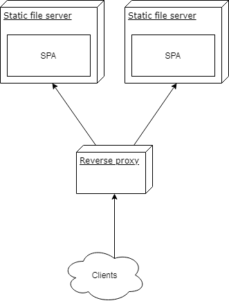

Normally, you would serve one SPA at a specific domain but sometimes the differentiating criteria has to be the path while the host (e.g. http://www.example.test) stays the same which means one application should be available at /foo and the other at /bar. If you do not want to read the whole explanation how to fix this, you can find the code of my solution on GitHub.
Unfortunately create-react-app does not support this endeavor yet and there are a dozen issues on their GitHub with new ones created regularly. If you build an CRA project you will find the following epilogue:
The project was built assuming it is hosted at 'the server root'.
You can control this with the homepage field in your package.json.
Which leads to absolute paths in the build/index.html:
/static/css/main.c17080f1.css
/static/js/main.37de2feb.js
Of course these will not resolve on the server if you serve at a specific path.
The first solution would be abusing the homepage property in the package.json and making it relative by setting it to "." which will result in:
./static/css/main.c17080f1.css
./static/js/main.37de2feb.js
However the CRA user guide also states that this is only sensible "if you are not using the HTML5 pushState history API or not using client-side routing at all" since URLs can be arbitrary and deeply nested which cannot be known in advance by the router.
Another option would be to use hash routing which adds # to your URL like in the old times with AngularJS. There is nothing too wrong about that, but I actually want to be able to use the HTML5 API to full extent.
So I will solve this by using absolute paths, however, I do not want to actually abuse the homepage field inside the package.json because it defies its semantics and syntax.
My suggestion is using the PUBLIC_URL environment variable which will substitute the %PUBLIC_URL% variables in the template public/index.html during the build phase. Alternatively, you can also add the variable to .env files, one for each environment, and choose the correct one during build-time but this gets ugly fast. However this means you have to rebuild each time you want to host it under a different location. For me, this is more like a theoretical limitation.
Unfortunately, the DevOps part is littered with pitfalls so I decided to write an explicit example for the following containerized components:

with the following relevant folder structure:
vm/
docker-compose.yml
foo/
// stuff by create-react-app init
nginx.conf
Dockerfile
bar/
// stuff by create-react-app init
nginx.conf
Dockerfile
gateway/
nginx.conf
Dockerfile
The two SPAs foo and bar were created with CRA and bar does client-side routing with react-router-dom and nested paths. The following paths should be resolved and routed to the correct container without trailing slashes or other invalid fragments:
/foo
/foo/
/bar
/bar/
/bar/routeA
/bar/routeB
/bar/routeB/1
/bar/routeB/2
/bar/routeB/2
In order to use client-side routing we just need to set the basename attribute of your aliased BrowserRouter:
<Router basename={process.env.PUBLIC_URL}>
This will not impact local development since the environment variable will only be set by the CI during build. That is the only modification we need on the client.
Each SPA is build as a Docker container and served by an nginx with the identical Dockerfile configurations:
FROM node as builder
WORKDIR /var/lib/app/
COPY ./package.json ./
COPY ./yarn.lock ./
COPY ./src/ ./src
COPY ./public/ ./public
ARG PUBLIC_URL
RUN yarn --frozen-lockfile --no-cache --production --ignore-optional
RUN yarn run build
FROM nginx
COPY nginx.conf /etc/nginx/nginx.conf
COPY /var/lib/app/build/ /var/www/I use a multi-stage build since node is only required for the build but you could also serve the files with serve like CRA suggests and keep the image. I am quite verbose with the COPY instructions but I like to be explicit here and not add everything in order to keep side-effects to a minimum.
The important part is the build argument PUBLIC_URL which will be injected by your CI if it builds your container and pushes it to a registry. I simulate this by the docker-compose.yml in the root of the vm folder for convenience and demonstration purposes.
The nginx.conf files for each SPA look pretty minimal too and will just serve the folder under the root, no path specific configuration here.
The interesting pitfall lies in the nginx.conf of the gateway which is the reverse proxy to our applications. You might be tempted to just do this:
location /foo {
proxy_pass http://vm_foo_1/;
}Which is not only inconvenient but will also lead to requests with double slashes upstream, e.g. //static/css/main.c17080f1.css. This will become an issue if you do fancier folder structures. In this scenario there would be no impact since the upstream nginx, which functions as static file server, interprets it correctly. The documentation enlightens us about this behavior:
If a location is defined by a prefix string that ends with the slash character, and requests are processed by one of proxy_pass [...] then the special processing is performed. In response to a request with URI equal to this string, but without the trailing slash, a permanent redirect with the code 301 will be returned to the requested URI with the slash appended.
Luckily they also include a fix which is the duplication of the location with a trailing slash:
location /bar/ {
proxy_pass http://vm_bar_1/;
}
location /bar {
proxy_pass http://vm_bar_1/;
}
location /foo/ {
proxy_pass http://vm_foo_1/;
}
location /foo {
proxy_pass http://vm_foo_1/;
}The only thing left is to build and push the individual containers to a registry which is a job for your CI. If you want to do this manually you would do something like:
docker build --build-arg PUBLIC_URL=<path> .This builds the container of the SPA with the correct PUBLIC_URL which will lead to valid requests, e.g. <PUBLIC_URL>/static/css/main.c17080f1.css and routing on the server.
However as I explained earlier the docker-compose.yml at the root does this for convenience and demonstration purpose, e.g.
services:
bar:
build:
context: ./bar
args:
- PUBLIC_URL=/bar
networks:
- test